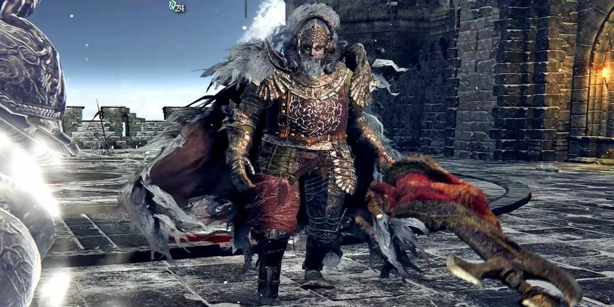

Montañas de los Gigantes
Manos Gigantes

Manos de Rykard que aparecieron en las montañas.
Comandante Niall
Comandante del castillo sol.

Gigante de Fuego

Gigante que custodia la forja de los gigantes y la llama de la ruina.